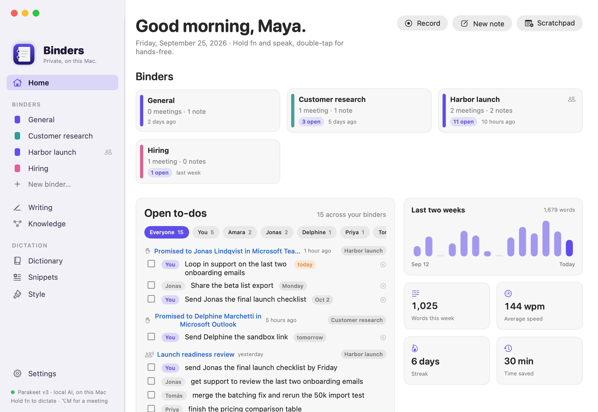
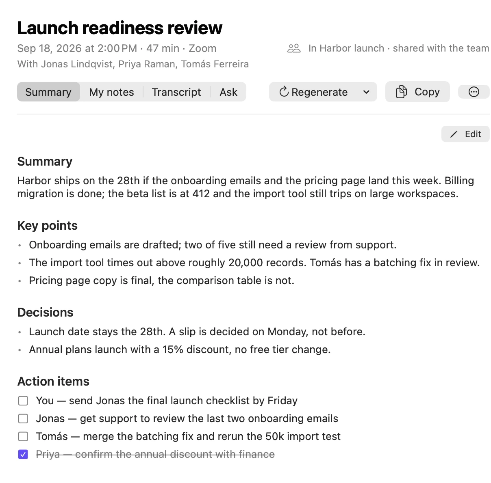
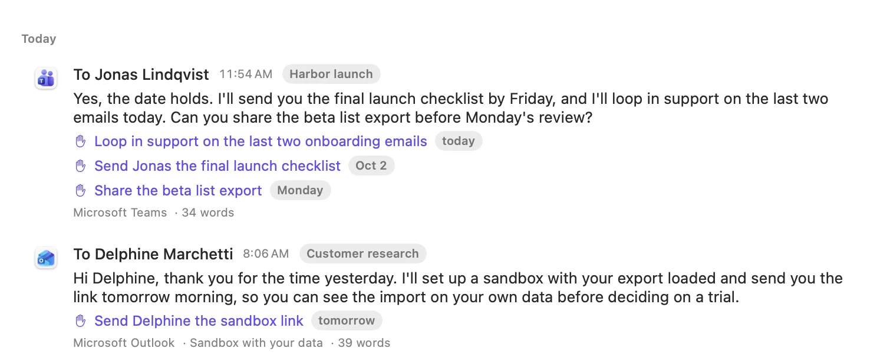
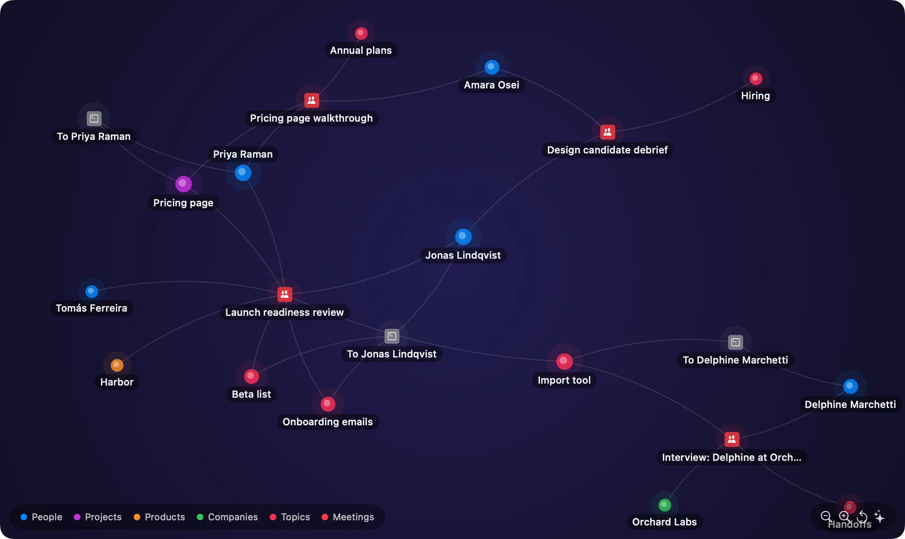
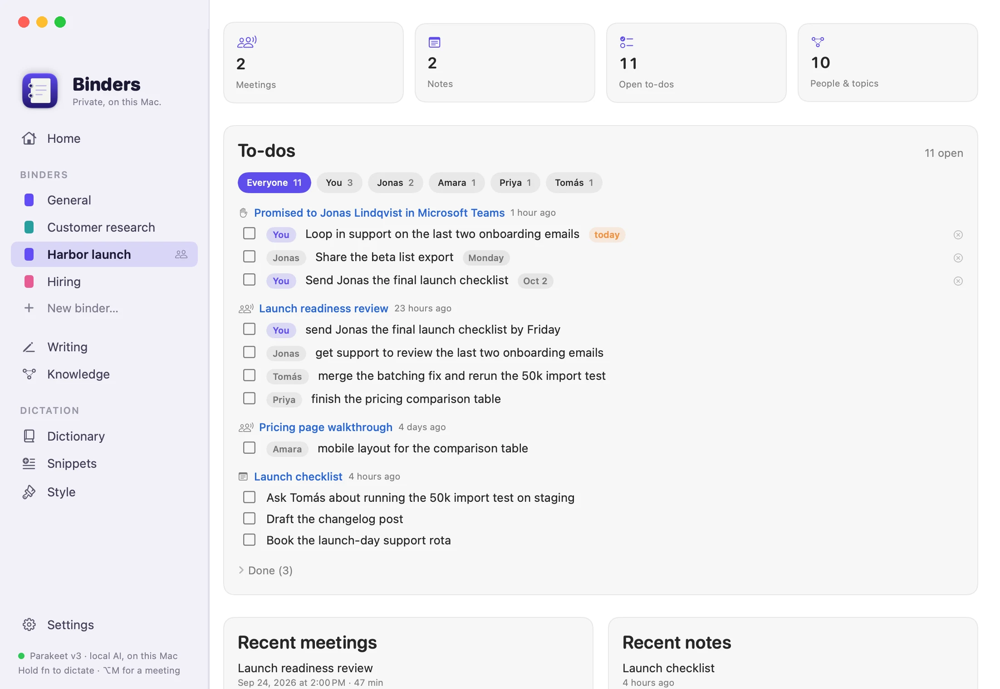

- Runs entirely on your Mac
- Free
- Open source
Remembers everything. Tells no one.
Binders turns what you say, what you hear in meetings and what you write into notes, to-dos and a memory you can ask anything. The speech models, the AI and your data all stay on your Mac.
No account, no subscription · macOS 14.2 or later · Notarized by Apple · Read the code
-
Send Jonas the final launch checklist Friday
-
Tomás Merge the batching fix and rerun the 50k import test
-
Let’s move the review to Thursday so support can join.
-
Annual plans launch with a 15% discount.

Private by construction, not by policy.
Your voice stays here
Speech is transcribed on the Neural Engine of your Mac. Audio is never uploaded, and once the speech model has downloaded, dictation works offline.
Your AI, on your machine
Notes, answers and to-dos come from a language model running in Ollama on your Mac. With that default, no prompt ever leaves it.
Free, because there is no server
No account, no analytics, no cloud of ours. Nothing runs on our side, so there is nothing to charge you for.
Say it
Dictation
Hold fn. Talk. Let go.
Your words land in whatever app has the cursor, already cleaned up: no ums, no false starts, and the correction you made mid-sentence is the one that sticks. Speech recognition runs on the Neural Engine, so it is fast and it works offline.
- Learns names and jargon from the edits you make afterwards.
- Matches the tone of the app: looser in chat, tidier in mail.
- Command Mode rewrites the selected text, answers a question, adds a to-do or puts it on your calendar.
JonasCan we find a time for the launch review tomorrow?
I think we should do the review at 3 pm tomorrow and bring the slides.
- fn
- Hold to dictate
- fnfn
- Hands-free
- fn⌃
- Command Mode
- ⌥M
- Meeting notes
- fnW
- Writing capture
Hear it
Meeting notes
Notes that know who owes what.
Binders records your microphone and the other side of the call in any meeting app, then writes the summary, the decisions and the action items, each with its owner. Every to-do from every meeting collects on one board, filtered by person.
- Works with Zoom, Teams, Meet or a recording you import.
- Full transcript with speakers, and an Ask tab for follow-up questions.
- Edit the notes and tick to-dos off right where they live.

Write it
Writing capture
It catches the promises you make.
Switch capture on and Binders keeps what you send in Teams, Outlook, Mail, Slack and your browser. When a message says “I’ll send it by Friday”, that becomes a to-do with a deadline and a reminder on the morning it is due.
- Kept only when you send or save. Keystrokes are never recorded.
- Labelled passwords, card numbers and long keys are redacted before anything is stored.
- Password managers and terminals are never read, and pages that look like a login or a payment are skipped.

Find it
Ask and knowledge
Ask your work anything.
Every meeting, note and message you keep becomes something you can question in plain language. Type it on the Knowledge page, or hold fn⌃ and ask out loud. Answers come with the sources they were drawn from.
- Finds things by meaning, not just matching words.
- Reads transcripts too, so “what did I say in that meeting” works.
- Answered by the model on your Mac. Your questions stay private as well.
Answer
You promised Jonas the following this week:
- The final launch checklist by Friday [1][2][3].
- To loop in support on the last two onboarding emails today [1].
Sources
- To Jonas LindqvistSep 25 · Microsoft Teams
- Launch readiness reviewSep 24 · transcript at 00:04
- Launch readiness reviewSep 24 · Summary
Real answers: Binders produced them from the fictional demo data in these pictures, with a model running on a Mac.

A memory with connections.
The people, projects and topics in your meetings, notes and messages are linked into a graph, so one question can travel from a person to everything they were part of.
Merge, rename or forget a person when the graph gets one wrong.
Share it
Binders and teams
One binder per thing you are working on.
A launch, a hire, a customer. Each binder holds its meetings, notes, to-dos and the people who come up in it. Share a binder with your team through a folder you already sync. There is no server of ours in between.

Connect it
MCP server · New in 0.2
Plug your memory into your AI tools.
Binders comes with an MCP server. Claude Code, Claude Desktop, Cursor and other tools that speak the Model Context Protocol can search and ask your knowledge base, and add to it: notes, meetings, to-dos and calendar events. It runs on your Mac, and only while the tool is connected.
One click in Settings to add it to
- Claude Code
- Claude Desktop
- Cursor
- Windsurf
- VS Code
- Gemini CLI
- Codex
Anything else that speaks MCP gets the configuration to paste. Nothing can be deleted this way.
What did we decide about annual plans?
binders · ask_knowledge
Annual plans launch with a 15% discount, and the pricing page shows three plans with the annual toggle on by default.
Launch readiness review · Pricing page walkthrough
Add a to-do for me: send Priya the pricing table by Tuesday
binders · add_todo
To-do added: Send Priya the pricing table · Tuesday
- Reads
search_knowledgeask_knowledgelist_meetingsget_notelist_todosrecent_dictations… - Adds
add_to_knowledgeadd_noteadd_meetingadd_todoadd_to_calendar…
And automations, for everything else.
Rules run a Shortcut, open a URL, run a script or call a web hook when you say a phrase in Command Mode, or when something happens in Binders. They live in a JSON file you can read and share.
When you say “ship it”
Run the Shortcut “Post release notes”
When meeting notes are ready
Call a web hook with {title}, {summary} and {link}
From Raycast, Shortcuts or a script
open "binders://todo?text=call%20Sam%20tomorrow"
A web hook is the only action that sends anything off your Mac, and only to the address you give it. How rules, links and the MCP server work
Privacy
Yours, on your Mac.
Binders has no account, no analytics and no cloud of its own. Here is exactly where your data goes, and the code that proves it is public.
Stays on this Mac
- Audio, transcripts, notes, meetings and captured writing, in one folder you can open.
- Speech recognition, with Parakeet or Whisper running on the Neural Engine.
- The search index and the knowledge graph.
- Your dictionary, snippets and settings.
Leaves only where you point it
- Text sent to your language model: Ollama on your Mac by default, or a server you choose.
- Binders you share with your team, through your own cloud folder.
- A web hook you set up yourself, to the address you give it.
- A one-time download of the speech models.
Read the full privacy notes · Read the code behind every claim
Binders is free.
No account, no subscription, no trial clock. Everything runs on your Mac, so there is no server for anyone to pay for. Signed and notarized by Apple, so it opens like any other Mac app.
Download Binders 0.3.1, free- 1Open the disk image and drag Binders to Applications.
- 2Allow Microphone and Accessibility when Binders asks. Accessibility is how it sees your shortcut and types for you.
- 3For notes, answers and to-dos, Binders uses Ollama, free software that runs the language model on your Mac. Binders can install it and pick a model that fits your Mac’s memory, from 8 GB up. Dictation works without it.
Version 0.3.1, a preview. Requires macOS 14.2 or later. Apple silicon recommended. Updates arrive inside the app, signed, and only once you allow it to check. Release notes · Help with setup
SHA-256 38b573bf84f5c4d014eb6f30ea31a27562bfdd742e87aa073c39d2ac3ce4dcb9